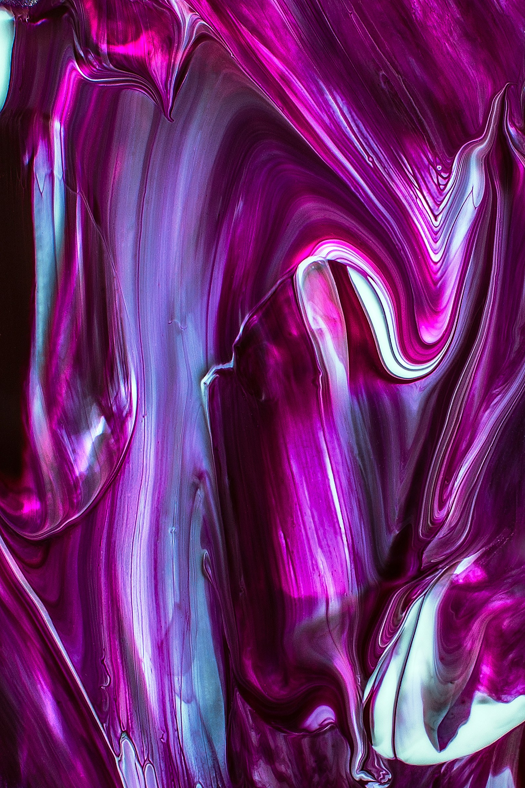
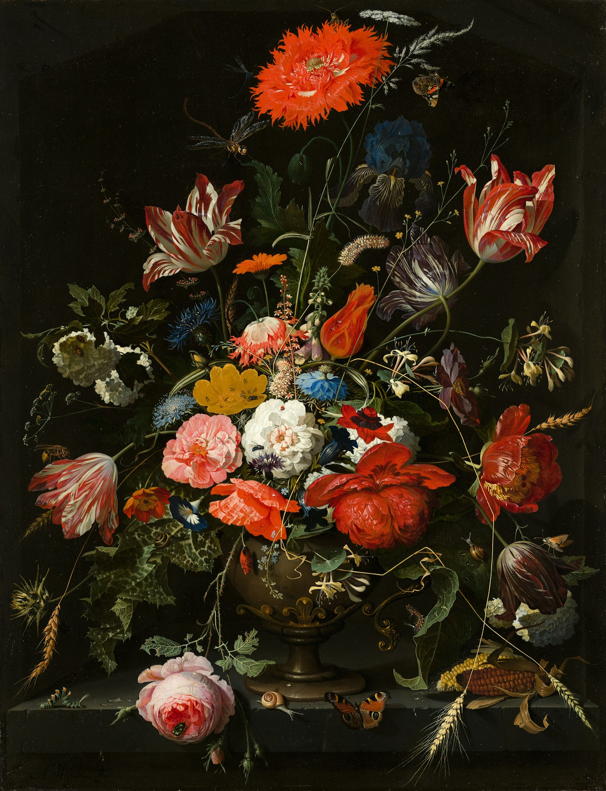

EDITION 01AN IMAGINED CULTURAL WEEKENDART / IDEAS / PEOPLE
COMMON
GROUND↗
Make room for
the unexpected.

New perspectives.
Shared spaces.
Open minds.
Art doesn't happen
in a vacuum.
It happens between us.
Common Ground imagines a place where a small exhibition becomes a big conversation. Where making matters as much as looking. Where you can arrive curious and leave with something you didn't expect.
02 / THE PROGRAMMEFind your
Find your
way in.
A fictional weekend of exhibitions, workshops and conversations. Build a personal visit below. No real events or tickets.
03 / YOUR PERSONAL PROGRAMMEA little structure.
A little structure.
A lot of possibility.
Save the sessions that catch your eye. The planner flags overlapping times so you can make room for each one.

ILLUSTRATIVE ARTWORK / A DIFFERENT WAY OF SEEING04 / STAY CURIOUSLook closer.
Look closer.
Ask something.
Make a mark.
Not everything needs an explanation. Sometimes the best way into an idea is to spend a little time with it.
OPEN TO INTERPRETATIONROOM FOR DIFFERENCEMADE FOR EXCHANGE
Imagine what's possible with Avalon ↗